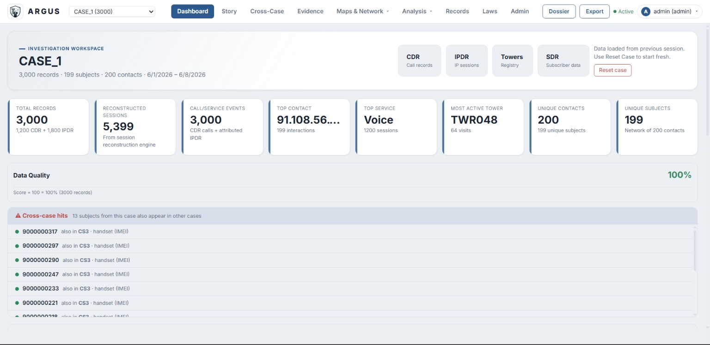
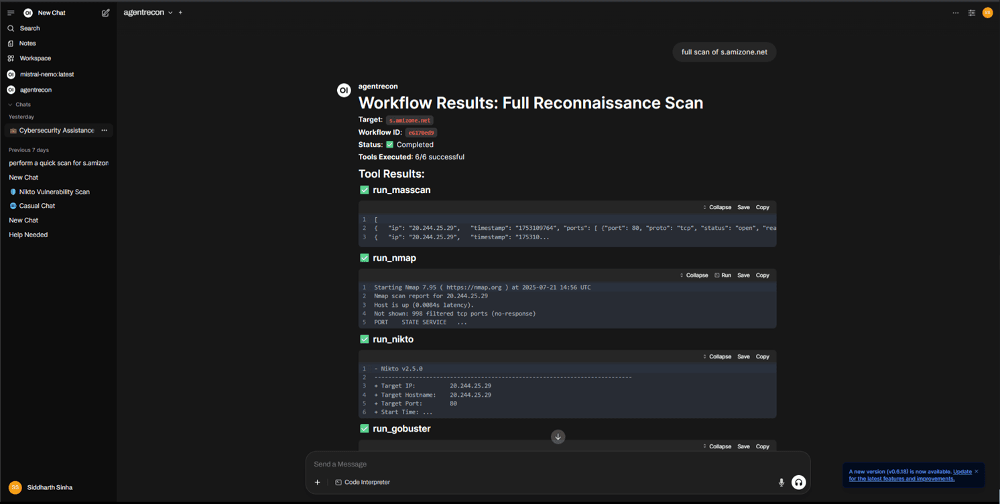
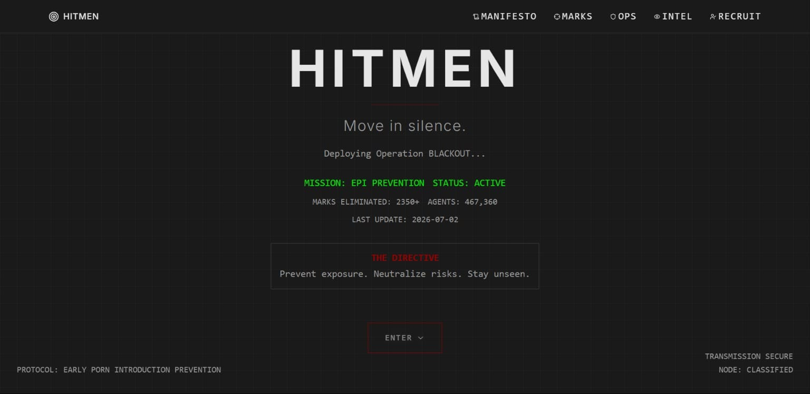
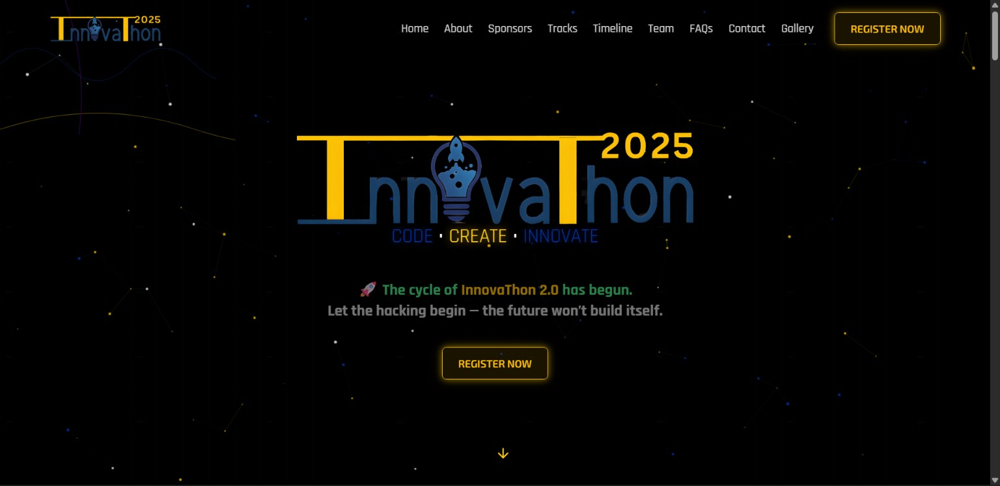
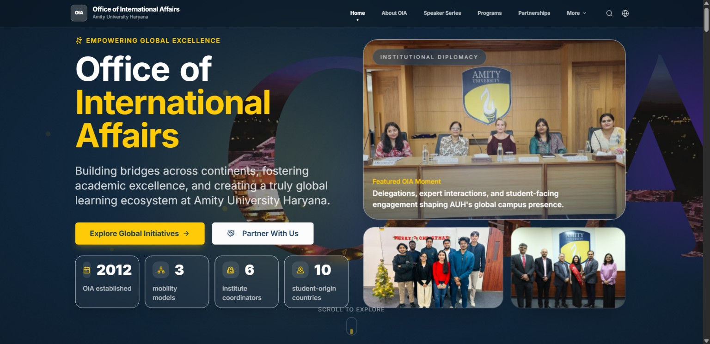

Loading
Loading
Computer science undergraduate focused on
cybersecurity, digital forensics, and AI-enabled systems.
A selection of my best work in cybersecurity, web development, and utility tools.

Full-stack telecom forensics platform for CDR/IPDR investigation with FastAPI, SQLAlchemy, Pandas, NetworkX, D3.js, and Leaflet. Features network graphs, tower movement maps, timelines, cross-subject correlation, and court-ready dossier export.
View CodeAI-powered network threat intelligence and monitoring platform with real-time network discovery, ARP scanning, Nmap-based enumeration, and local CVE intelligence engine. Features a natural language control layer using local LLMs and a modular SOC-style architecture designed for offline-first deployment.
View Code
Automated reconnaissance and vulnerability analysis pipeline integrating Nmap, Masscan, Nikto, Gobuster, and SSLyze. Features custom CVE enrichment from NVD and AlienVault OTX, with AI-driven false positive filtering for improved signal accuracy.
View CodeRetrieval-Augmented Generation pipeline for private PDF question answering. Features a custom Siamese BiLSTM embedding model in Keras, hybrid dense + TF-IDF retrieval, and grounded answer generation with extractive fallback for low-resource settings.
View CodeAnalytics platform for Formula 1 telemetry and race data using FastAPI, Streamlit, and SQLAlchemy with XGBoost predictive models for race outcomes. Includes strategy simulation for pit-stop timing and tyre management, plus an AI-powered natural language interface.
View Code
Community-driven moderation and harmful content tracking platform leveraging crowdsourced inputs and structured reporting. Integrates Discord API for dynamic entity fetching with automated status verification and real-time state transitions.
View Live
Full-stack hackathon management and event platform with structured sections for overview, sponsors, competition tracks, timelines, and FAQs. Designed with a visually rich, futuristic UI and component-driven layout architecture.
View Live
Web platform for international academic collaboration featuring program highlights, partner universities, student mobility initiatives, and institutional outreach. Built with responsive multi-section content architecture for the Office of International Affairs at Amity University.
View LiveMy expertise spans across full-stack development, cloud computing, and security assessment.
My professional and academic experience so far.
Selected among 1,000+ students from 15,000+ national applicants for the 13th edition of this premier in-person cybersecurity programme. Completed practical training under Dr. Rakshit Tandon across cyber hygiene, AI scam prevention, OSINT, and digital investigation. Worked through investigation-oriented learning modules focused on real-world cybercrime awareness, evidence handling, and defensive-security thinking.
Manage backend content workflows and structured institutional data across digital platforms, improving accuracy and accessibility. Support media operations through event coverage, photography, and standards-aligned content publishing.
Performed hands-on vulnerability assessments and security reviews across systems and networks in a government cybersecurity environment. Applied threat detection, risk analysis, and mitigation concepts to practical defensive-security scenarios.
Completed intensive training in penetration testing, vulnerability assessment, network security, and ethical-hacking workflows. Used common assessment tools and frameworks to identify vulnerabilities and understand defensive controls.
Built and refined frontend and backend web features using HTML, CSS, JavaScript, and integrated application workflows.
Leadership: Mission Veerangana organising team; former Nihon Culture Club Coordinator; member of University Digital Club.
Achieved a 100-day streak on TryHackMe, attaining Rank 200,830 and Level [0x8][HACKER], demonstrating consistency in hands-on cybersecurity practice.
View Details →Secured 13th position out of 80 teams in a Capture The Flag competition organised by IEEE Computer Society in collaboration with IIT Bombay Trust Lab.
Participated in Smart India Hackathon 2024, contributing to Problem Statement ID SIH1674.
Native / Bilingual Proficiency
Native / Bilingual Proficiency
Elementary Proficiency
Have a project in mind or just want to connect? I'm always open to new opportunities.
I'm always open to discussing new projects, creative ideas, or opportunities in cybersecurity and web development.